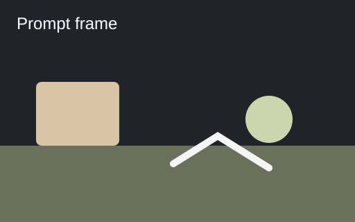
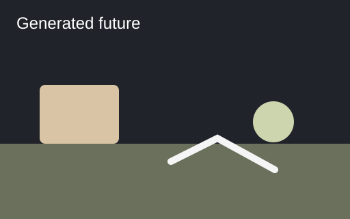
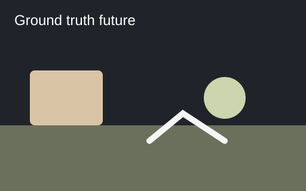

Prompt

Run receipts, rollout inspection, and action-conditioning audits for the public 1X world-model challenge.



| loss | 8.7900 |
|---|---|
| acc | 0.0320 |
| LPIPS | 0.2070 |
Actions are public in the dataset surface; the GENIE baseline remains video-only.
A compact contributor layer for turning challenge runs into inspectable artifacts.
Capture command, checkpoint, dataset, git SHA, external-data notes, FLOPs fields, and metrics in one reproducible report.
Review prompt, generated, and ground-truth media side by side with failure tags for object consistency, contact, and action mismatch.
Trace where public actions are described, where actions.bin is recognized, and where the baseline drops action tensors.
The public challenge is about evaluating robot futures. The strongest contribution is not a toy model; it is tooling that helps outsiders reproduce runs, inspect generated futures, and reason about the public action-conditioning gap without overclaiming private 1X knowledge.
Static, reviewable artifacts that work without a GPU or the full dataset.
Built around the public repo, with conservative claims and reproducible commands.